Ya Wen Fu 傅雅雯*1980 in Y
unlin, Taiwaninfo@tamtamart.deYa Wen Fu Education1999 – 2003 Bachelor of Fine Arts, National Taiwan University of Arts, Taiwan2004 – 2007 Goethe-I
Ya-Wen Fu
2013
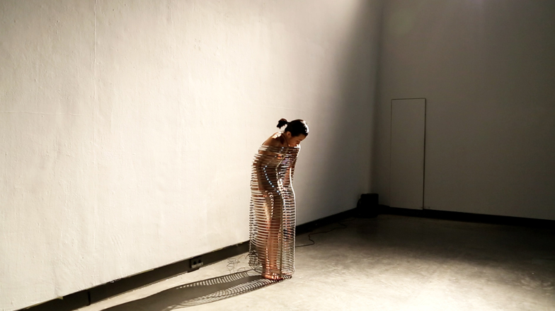
| 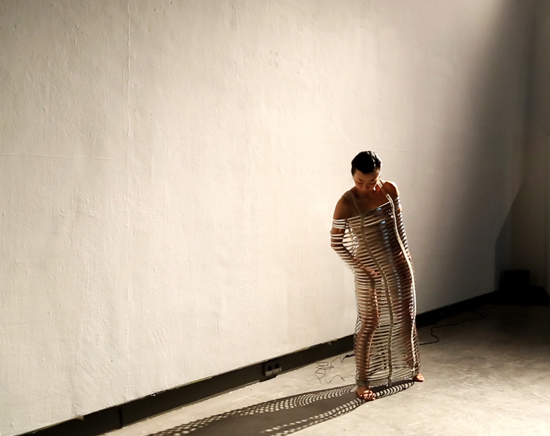 | 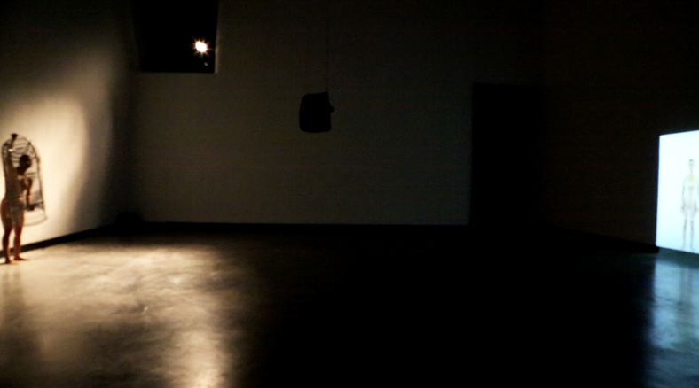 |
| “Der Körper, in dem ich zu Hause bin″ | HGB Gallery, 2013 |
| Der Körper, in dem ich zu Hause bin, Performance, Video, Installation 2013 |
| Die hier gezeigte Arbeit besteht aus zwei, sich gegenüberliegend positionierten Aspekten. In der Videoarbeit improvisiere ich einen realen Zustand durch meinen körperlichen Ausdruck. Ich zeige einen Menschen in seiner Wahrnehmung, Bewegung und dem Erkennen seiner Grenzen. Um diesen realen Zustand zu verdeutlichen und somit sichtbar zu machen, verwende ich in meiner Performance eine Skulptur, die im übertragenen Sinne für ein Korsett steht. Die Skulptur besteht aus 80 Metallringen und ebenso vielen Spannfedern. Meine Körperbewegung wirkt Druck auf die jeweiligen Metallringe aus und die Spannung auf den Körper erhöht sich. Daraus entwickelt sich eine Kommunikation zwischen Körper und Skulptur und führt zu einer Wechselwirkung von Anspannung und Entspannung. Das Video und meine Performance stehen im unmittelbaren Zusammenhang. Durch die Gegenüberstellung wird der Prozess von Wahrnehmung, Bewegung und Begrenzung für den Zuschauer erfahrbar. Einerseits stellt die Performance die Realität dar. Jedoch weise ich mittels der Skulptur dieser Realität eine Grenze zu. Allerdings existiert solch eine substantielle Begrenzung im wahren Leben nicht. Auf der anderen Seite vermittelt das Video einen realistischen Zustand in dem sich der Körper scheinbar frei und ohne sichtbare Grenzen bewegt. Erst durch die Konfrontation mit der Performance wird auch hier eine bestimmte Begrenztheit deutlich. Ich glaube, wir alle leben mit unseren Grenzen, aber die wenigsten von uns nehmen diese wahr. Mein Anliegen mit dieser Arbeit ist es, durch die Veranschaulichung einen Erkenntnisprozess beziehungsweise -zustand hervorzurufen, in dem man sich seiner eigenen Grenzen bewusst wird. |
2013
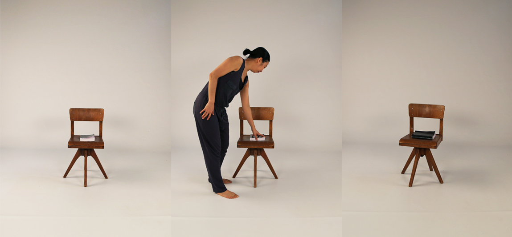
| 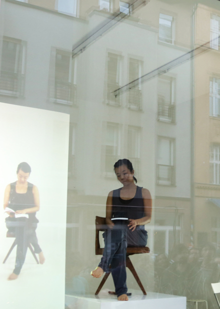 | 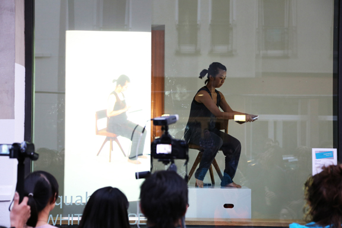 |
| “Ich habe die Wahl″ | aquabitArt Gallery, 2013 |
| Ich habe die Wahl Performance, Video 2013 |
| What is identity? Is identity a way for individuals, groups or groups of individuals to differentiate themselves from one another in their social relations? How the subject identifies with its own existence in space and time? This self-consciousness and self-assertion, the process, include not just one's own self-image, but also the inclusion of the others. Do they have the same or comparable awareness, the same understanding of my/one identity? Who am I? Such a simple yet complex question. Because we live between different systems, we live in prefabricated identities and those of others. So one would be born into a certain identity, characterized by race, gender and familial status. We also acquire certain identities during the course of our lives. Regardless whether we actively live through such identities or not, they're given to us. |
2012


| 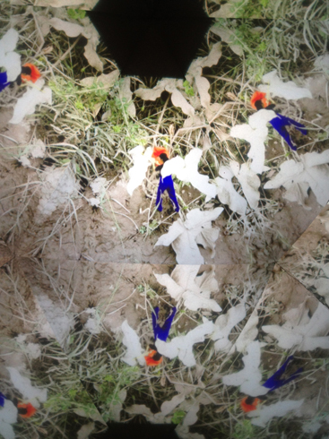 | 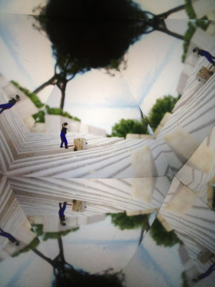 |
| 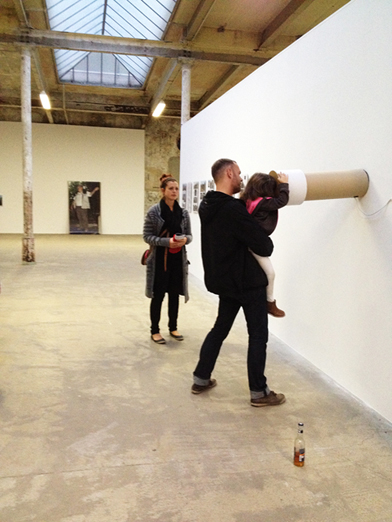 | 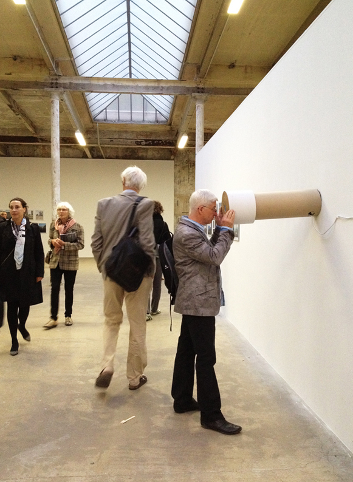 |
| “Viaggio in Italia /Italienische Reise 2010-2012″ | Leipzig, 2012 |
| 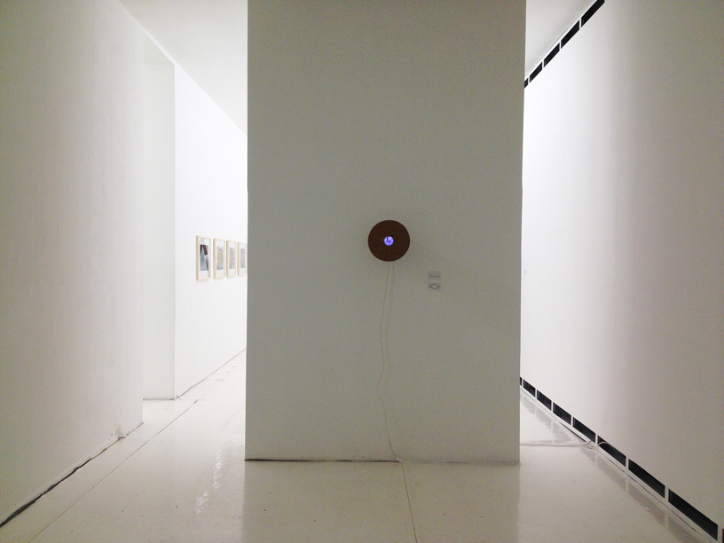 | 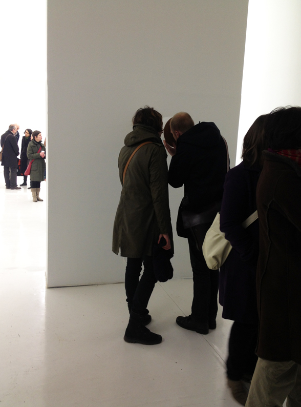 |
| “Viaggio in Italia / Italienische Reise 2010-2012″ | Frankfurt, 2013 |
| 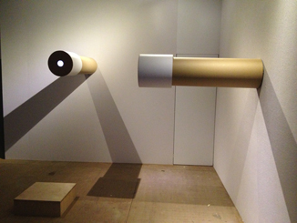 | 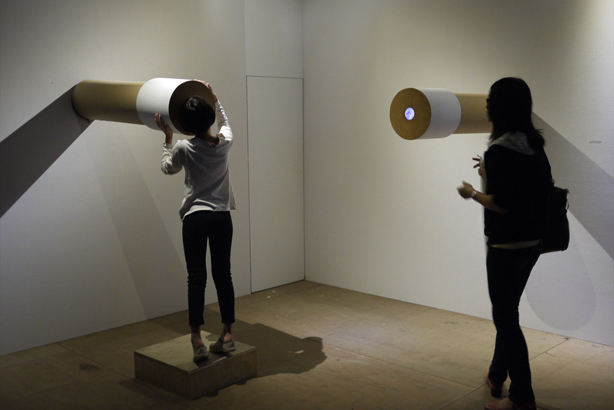 |
| “Artificial Nature“ | Taipei (Taiwan), 2012 |
| Stadt Zeit Verschiebungen , Videoinstallation 2012 |
| In diesem Projekt versuche ich die Einwohner Tivolis anhand ihrer Gesten und Bewegungen näher zu betrachten und wie sich die unterschiedlichen Kommunikationsformen gegenseitig beeinflussen. Dabei interessiert mich nicht nur deren geschlechterspezifisches Verhalten, sondern auch die Einzelpersonen in einem sozialen Gefüge. Ebenfalls wird die Vorstellung, dass eine Frau die Rolle einer typisch männlichen Tätigkeit übernimmt, beispielsweise die eines Handwerkers, und sie so die Erneuerung der Stadt vorantreibt, dargestellt. Als Ausgangsmaterial für mein Video dienen mir die vor Ort entstanden Fotos. Für das Video werde ich mich selbst in diese Rolle hineinversetzen, wobei mein Geschlecht undefiniert bleibt und mit Hilfe von Animation werde ich dann charakteristische männliche Gesten darstellen. |
2012
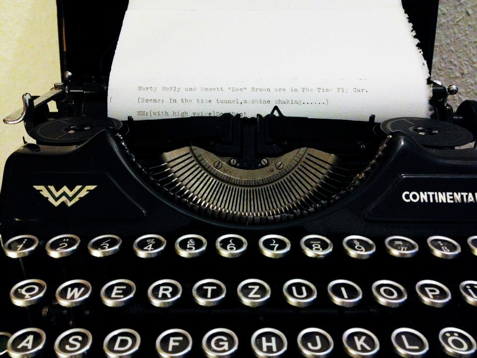
| 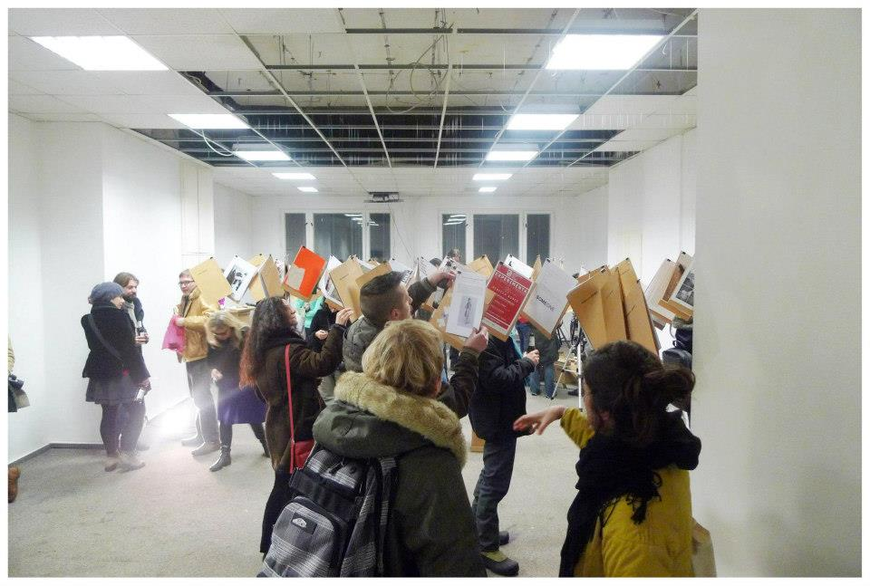 | 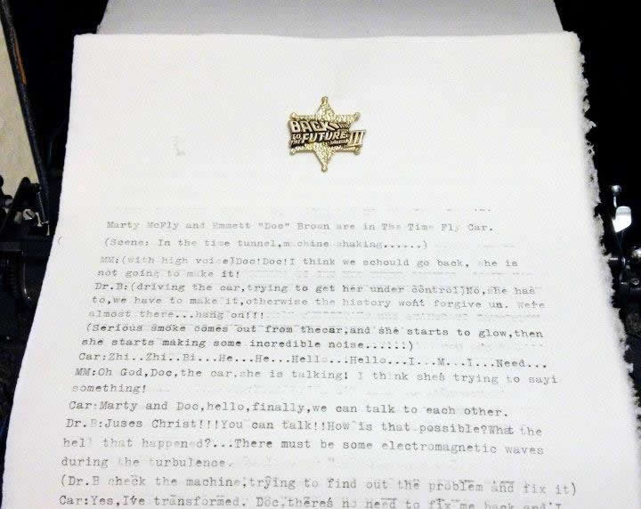 |
| “Back to The Future“, in zusammenarbeit mit tamtamART Group | CORPO 6 GALERIE Berlin , 2012 |
2012

 |
 |
| “VOLIMAGE“, in zusammenarbeit mit tamtamART Group | Interactive installation, Galerie im Turm, Berlin, 2012 |
2012
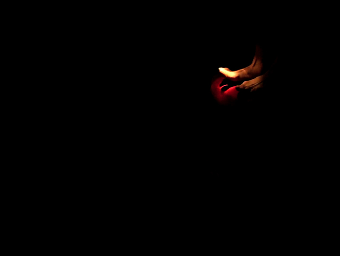
| 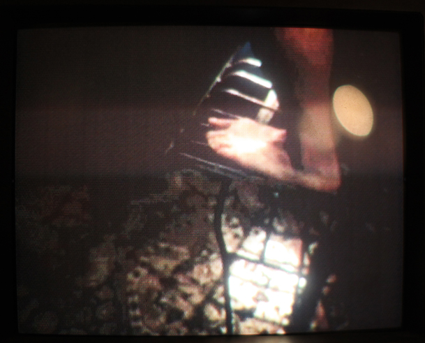 | 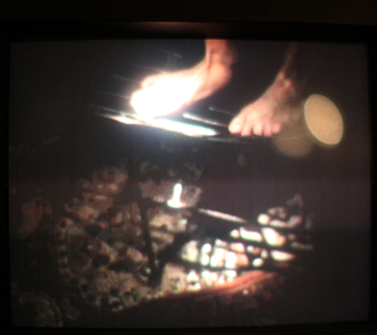 |
| “Abendteuer“, Videoinstallation | Leipzig, 2012 |
t Berlin
Since 2007 Studies in Media Arts, HGB Academy of Visual Arts Leipzig, Intermedia Class of Prof. Alba D`Urbano
Exhibitions
2010 “Touch me!” Galerie Sylvia Bernhardt, Wiesbaden
2010 “Chain of Fools” HGB Academy of Visual Arts Leipzig
2009 “Untitled” Leipzig
2009 “Kampf” Berlin
2004 Installation “Through” Taipei, Taiwan
2002 “Motions and Images” Taipei, Taiwan
2002 “Spiel” Taipei, Taiwan 2001 “Mandarins” Taipei, Taiwan
2000 Exhibition of Graphic Design, Taipei, Taiwanm